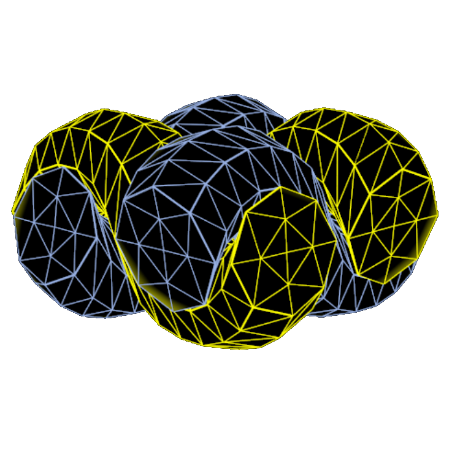
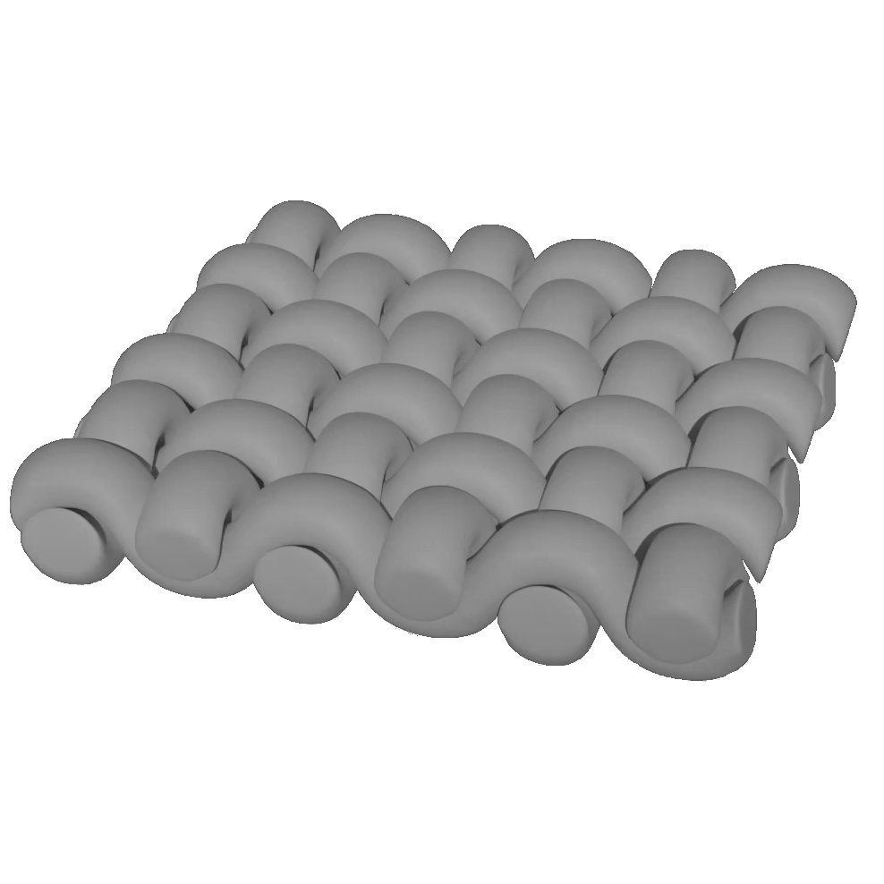
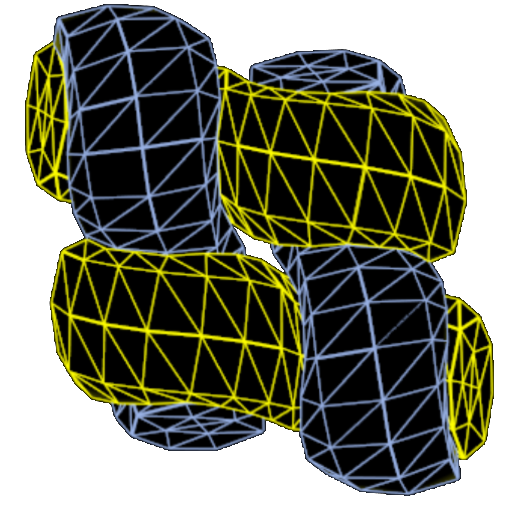
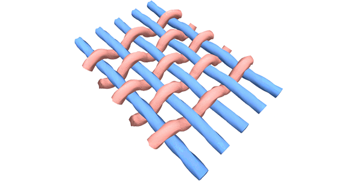
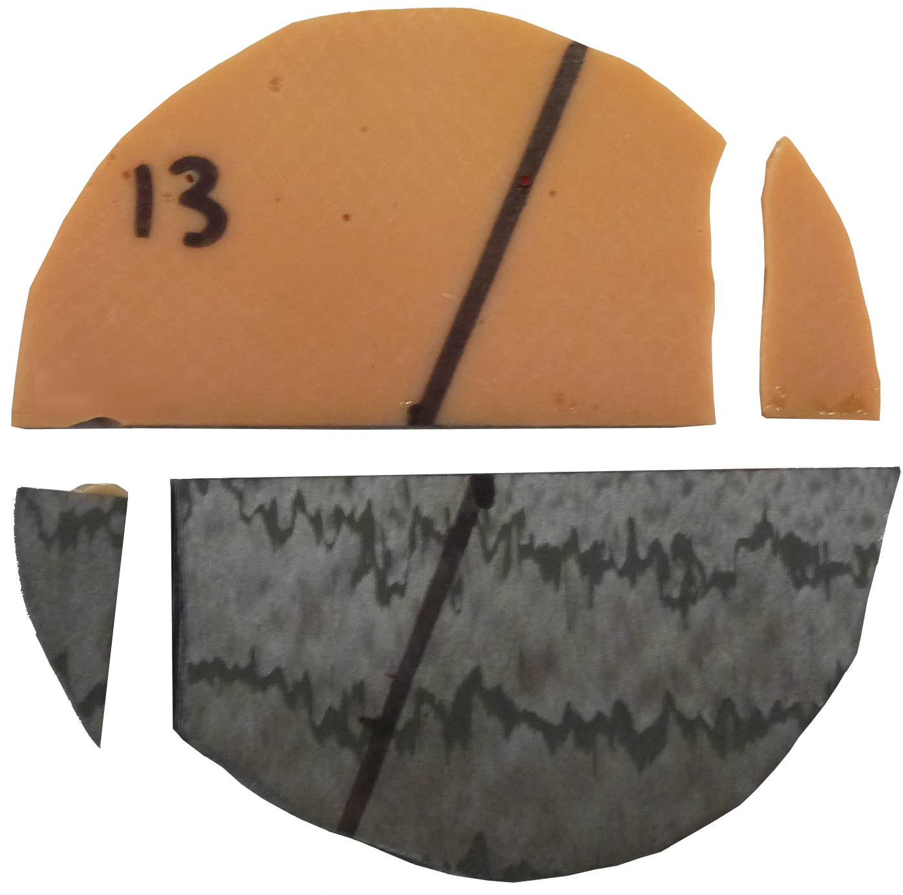
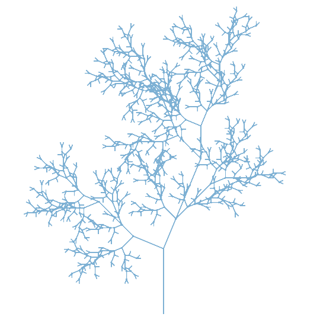

Introducción
¡Hola! Soy Alberto, ingeniero mecánico especializado en simulaciones numéricas basadas en físicas.
Actualmente estoy escuchando ofertas de empleo. Puedes contactar conmigo por correo: albertomge@gmail.com
Actualmente estoy escuchando ofertas de empleo. Puedes contactar conmigo por correo: albertomge@gmail.com
Currículum
-
Ingeniero I+D Nov 2016 - Oct 2021 en la Universidad Rey Juan Carlos y posteriormente en
SEDDI.
Desarrollo de un modelo de elementos finitos tridimensionales que permitiese reproducir fielmente el comportamiento estructural de un tejido.Aunque no desarrollé el software de simulación (Original), entre otras cosas he realizado:- Generación procedural de parches de hilos.
- Modelo de colisión.
- Periodicidad y condiciones de contorno periódicas.
- Material anisótropo.
- Simulación ante tracción, flexión y cizalladura.


Trabajos previos
Estudio de modelos de simulación a escala de hilo

Caracterización del fallo de uniones adhesivas de fibra de carbono

Estudio de los parámetros de rotura. Ensayos numéricos y experimentales.

Estudio de la tenacidad a fractura incluyendo una grieta en la unión. Ensayos numéricos y experimentales.
Títulos
- Grado en Ingeniería en Tecnologías Industriales. Universidad de Sevilla
- Máster en Ingeniería Industrial. Universidad de Sevilla
- Máster en Informática Gráfica, Juegos y Realidad Virtual. Universidad Rey Juan Carlos
Aptitudes
- Programación: Python, C++, MATLAB, ANSYS APDL
- Simulación numérica basada en físicas a bajo nivel. Especializado en el Método de los Elementos Finitos.
Proyectos personales
En desarrollo
Otros
- Trabajando en PyPLants, una librería de Python que permita generar plantas procedurales usando Sistemas de Lindenmayer. Puedes probarla de forma interactiva en el siguiente enlace (Nota: se requiere conocer el tema para modificar los ejemplos):

- Refrescando la teoría detrás del Método de los Elementos Finitos en el curso Finite Element Procedures for Solids and Structures de Klaus-Jürgen Bathe
- He creado esta web partiendo desde cero. No es perfecta, pero estoy muy contento con el resultado al no haber estudiado HTML y CSS.